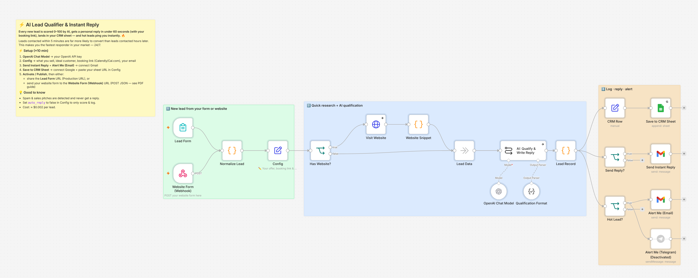

Import. Connect.
Done.
1 · Import the file
2 · Connect your accounts
3 · Fill in one Config node
4 · Publish ✅

Real n8n canvas of workflow 06 · every workflow has a 🟨 START HERE note, one ✏️ Config node and color-coded steps